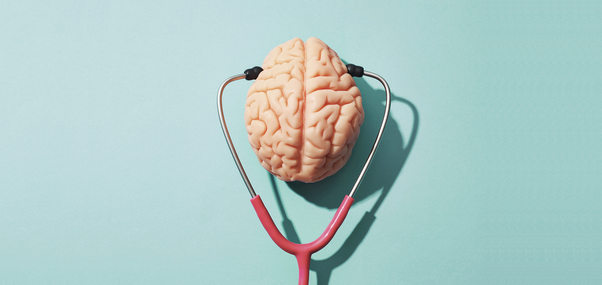

What are the characteristics of strong mental health?
Simon Rosenbaum || May 27, 2020
Mental health and mental illness are not simply two sides of the same coin.
Mental health, just like physical health, exists on a spectrum from poor to optimal.
With physical health, some days we naturally feel stronger and more energetic than others.
Similarly, some days our mental health is worse than others, and that too is a natural part
of being human. We may feel tired, grumpy, sad, angry, anxious, depressed, stressed, or even
happy at any point in time. These are all normal human emotions, and aren’t on their own a sign
of mental illness.
Someone living with a mental illness can be experiencing optimal mental health at any point in
time, while someone else can feel sad or low even in the absence of a mental illness.
Differentiating between poor mental health and symptoms of a mental illness is not always clear-cut.
When poor mental health has a sustained negative impact on someone’s ability to work, have meaningful
relationships, and fulfil day-to-day tasks, it could be a sign of mental illness requiring treatment.
"
Amid the coronavirus pandemic we are being warned of a “second wave” of mental health
problems that threatens to overrun an already weakened mental health service.
"
As we emerge from this crisis, while some people may need specialist help with treating mental illness,
everybody can benefit from strategies to improve mental health.
This is because mental health is more than just the absence of mental illness. Positive mental health is a
combination of feeling good and functioning well.
Your mental health is shaped by social, economic, genetic and environmental conditions. To improve mental
health within society at large, we need to address the social determinants of poor mental health,
including poverty, economic insecurity, unemployment, low education, social disadvantage, homelessness
and social isolation.
On an individual level, there are steps you can take to optimise your mental health. The first step is identifying
your existing support networks and the coping strategies that you’ve used in the past. There are also small things
you can do to improve your mental health and help you to cope in tough times, such as:
helping others
finding a type of exercise or physical activity you enjoy (like yoga)
getting good sleep
eating healthy food
connecting with others, building and maintaining positive relationships
learning strategies to manage stress
having realistic expectations (no one is happy and positive all the time)
learning ways to relax (such as meditation)
counteracting negative or overcritical thinking
doing things you enjoy and that give you a sense of accomplishment.

How do I know if I need extra support?
Regardless of whether you are experiencing a mental illness, everyone has the right to
optimal mental health. The suggestions above can help everyone improve their mental health
and well-being, and help is available if you’re not sure how to get started.
However, when distress or poor mental health is interfering with our daily life, work, study
or relationships, these suggestions may not be enough by themselves and additional, individualised
treatment may be needed.